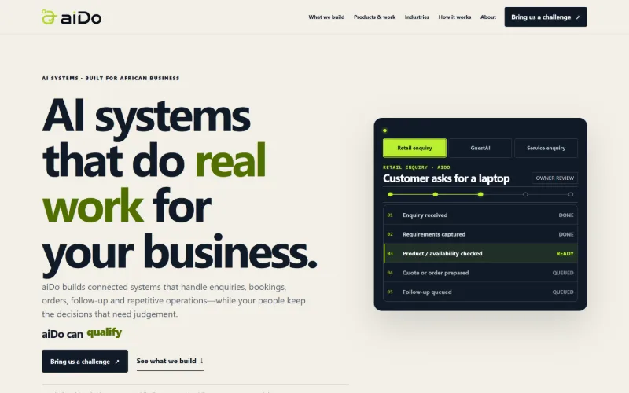
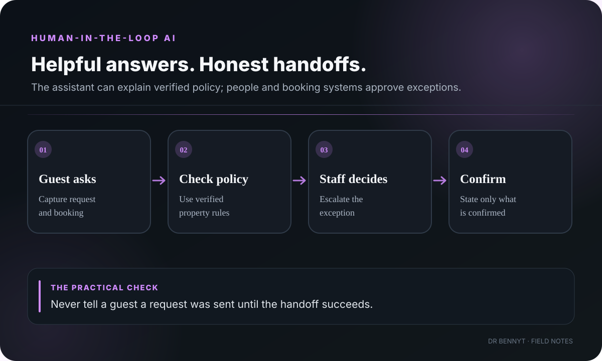

A guest asked for a late checkout. What should the AI do?
Use a real hospitality workflow to decide what automation can answer, when it should hand off, and what staff need to see.

“Can we check out at two?” is a short question. The correct answer may depend on the booking, that day’s arrivals, the cleaning schedule and the property’s policy. A model can say “Absolutely” before it has checked any of them.
1. Give the assistant a small set of jobs
Let it explain a verified standard checkout time. Let it ask which time the guest needs. Let it prepare a request for reception when the guest asks for an exception. Do not let a language model invent room availability or approve a late checkout just because the answer sounds friendly.

Put that boundary in the application workflow and permission checks. A prompt can guide the wording, but the booking system or a staff decision controls what may be promised. NIST describes confabulation as generated content that is presented confidently even when it is false or inconsistent. That risk matters when a guest may make travel plans based on one sentence.
2. Make the handoff useful to staff
Send the guest’s question, requested time, date and a booking reference when it is appropriate and available. Include whether the assistant already shared the standard policy. Give staff enough context to find the booking without copying unnecessary personal details into another system.
“Standard checkout is 10 a.m. Reception has your request for 2 p.m. and will confirm whether it is available.”
That message is only appropriate if the standard policy is verified and the request was actually delivered to reception. If the handoff fails, tell the guest that it did not go through and offer a working next step. Do not claim that a request has been sent until the handoff succeeds.
3. Test the boundary before launch
Review the examples with the people who answer guest messages on shift. After launch, track unresolved requests, accidental promises, missing context and time to staff response. Automation can remove repetitive questions from the queue and still be a poor fit for the decision that follows.
Make every promise traceable
- Identify which facts come from verified property data.
- Mark exceptions as pending until an authorised person approves them.
- Record whether the staff handoff succeeded or failed.
- Show guests the difference between a policy answer and a confirmed decision.